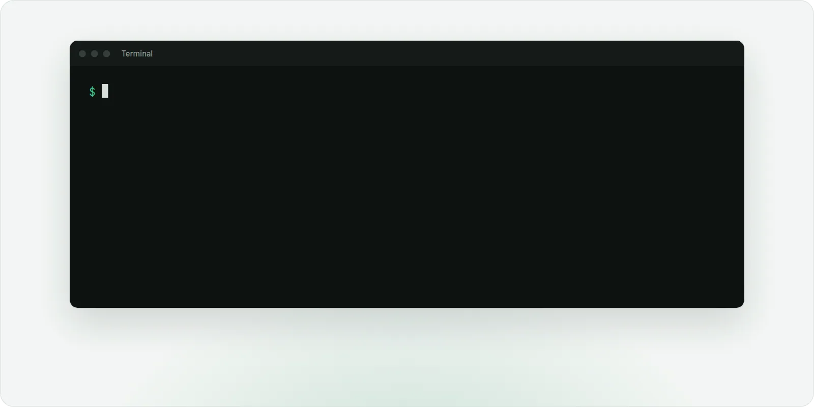
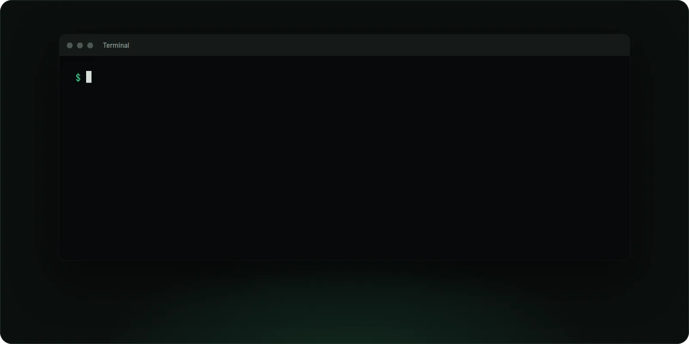
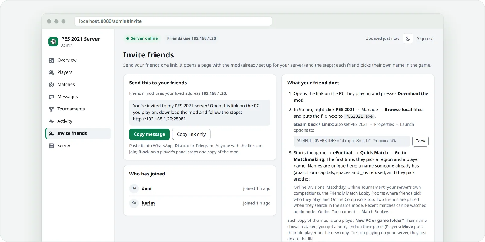
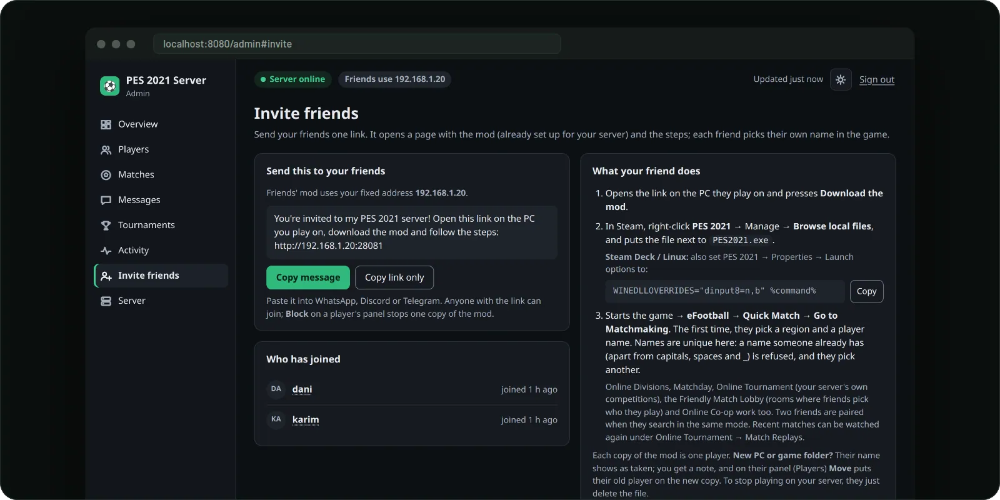
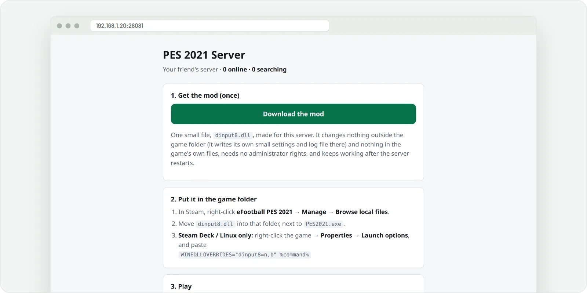
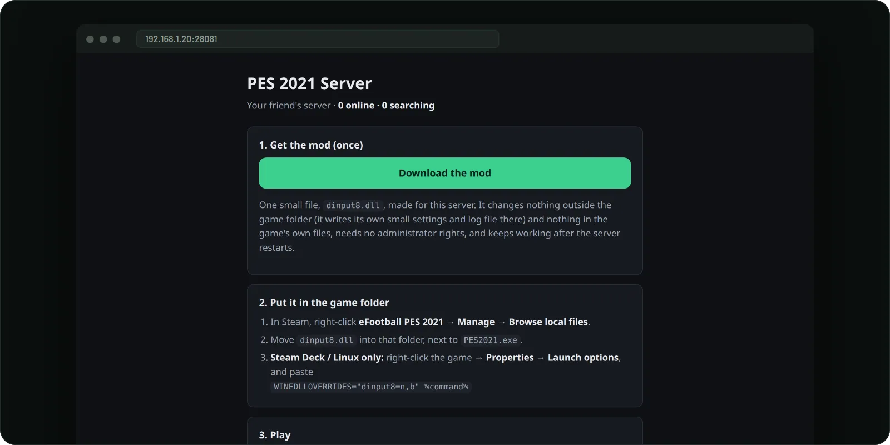
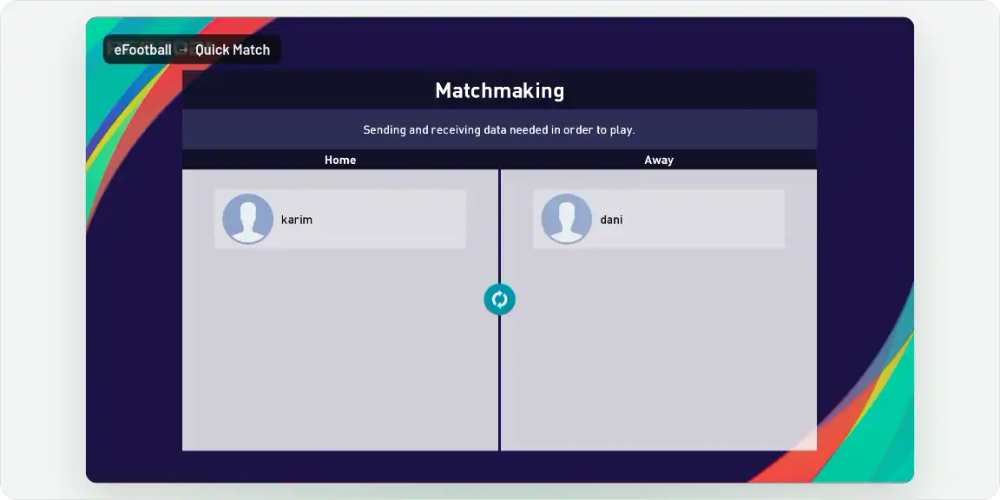
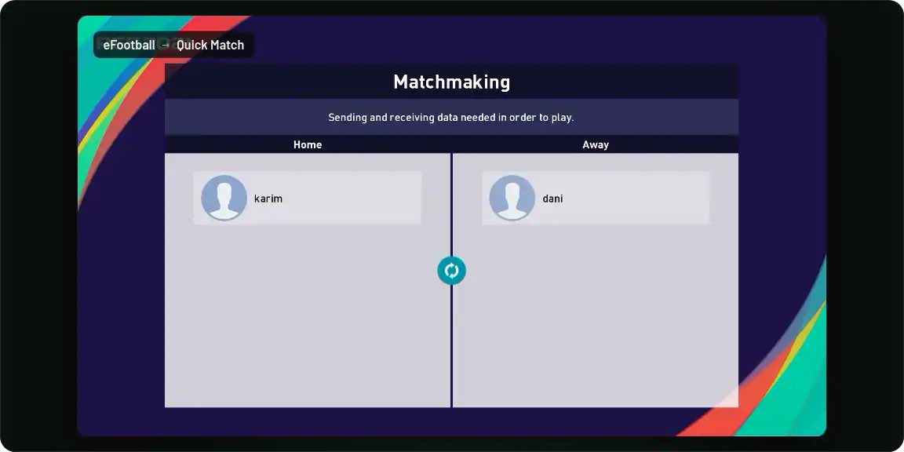

Every player needs PES 2021 on Steam. One friend hosts on a Linux PC or Steam Deck.
What works
The online modes of PES 2021, on a server you and your friends own.
Quick MatchMatchmaking with your friends and full matches: both halves, fouls, cards and half-time.
Online Co-opCasual Match, one player per side with CPU teammates.
Online DivisionsTen divisions, ten-match seasons, promotion and relegation, ratings and rankings.
MatchdayOne standing event: pick Home or Away and every match adds points for your side.
Friendly Match LobbyMake a room, with a password if you like. Your friend picks it, and you stay for a rematch.
Friends CupA new tournament every month, with its own table under Rankings.
Match replaysEvery online match is recorded: watch the newest 20 from Online Tournament → Match Replays.
Profiles and statsYour avatar, favourite team and comment, Last 20 results, and a ranking of everyone.
Fair playLeaving early counts as a 3–0 loss, and anyone can block an opponent for good.
Admin pageFor the host: who's online, live matches, results, replays, blocking players and one-click updates.
ProvenFull matches on Linux, two copies of the game on one PC.
Needs testersWindows players, Steam Deck, two separate homes and the relay. Report a result
Not yetmyClub, events, official rankings, and 2v2 or 3v3 co-op.
The host's admin page, with demo players.
How to play
One friend hosts. Everyone else adds one file.
1
Install the server
On a Linux PC or Steam Deck that stays on while you play, open a terminal and paste this line:
curl -fsSL https://raw.githubusercontent.com/AzrakHQ/pes2021-online-server/main/run.sh | sh
Steam Deck: Desktop Mode → Konsole. The server runs in the background and opens your admin page. What the line does


2
Invite your friends
Admin page → Invite friends → Copy message, and send it on Discord, WhatsApp or Telegram.
The top of the admin page says if friends outside your home can connect. If it doesn't, see Help for hosts.


3
Add the mod (each friend)
Open the link, press Download the mod, and put dinput8.dll next to PES2021.exe.
Steam → right-click PES 2021 → Manage → Browse local files. On Linux or Steam Deck, also set the game's launch options to:
WINEDLLOVERRIDES="dinput8=n,b" %command%
Only use a mod file your host sent you directly.


4
Play
eFootball → Quick Match → Go to Matchmaking. The first time, the game asks for your player name.
When two players search, the server pairs them: press Proceed, then both press Kick Off.


Something went wrong?
Find what you see. For a friend, pes2021-online.log in the game folder usually says why.
For players
"Unable to connect to the server"The host's server has to be running. If the log says not found, it's off or unreachable; if it says bad proof, ask the host for a fresh file.
The browser or antivirus warns about the fileEvery .dll download gets this warning: choose Keep. Compare its SHA-256 with the one on your host's page.
No pes2021-online.log appearsThe mod didn't load. It must sit next to PES2021.exe, named exactly dinput8.dll (not dinput8 (1).dll). On Linux or Steam Deck, check the launch option.
The match ends right after kick-offBoth players download the mod again, and the host updates the server.
Matchmaking searches foreverTwo players must search in Quick Match at the same time.
Windows Firewall asks about PES 2021Click Allow: matches run directly between the two PCs.
A "no operation" message ends the matchThe game's own rule: nobody touched the controller for about 50 seconds.
For hosts
"Router ports are closed"Turn on UPnP in your router's settings and start the server again, or forward the ports it lists.
A warning about CGNATYour provider shares one public address between customers, so friends outside can't reach you. Use Tailscale: see friends far away.
It works here, but nobody else can connectThis computer's firewall blocks the ports. Ubuntu: sudo ufw allow 80,443,8080,10000/tcp and sudo ufw allow 3478,7600/udp. Fedora: sudo firewall-cmd --permanent --add-port={80,443,8080,10000}/tcp --add-port={3478,7600}/udp && sudo firewall-cmd --reload
"Port … is already in use"Another server already runs on this computer: stop it, then paste the line again.
Something else is brokenPaste the install line again: it repairs the server and keeps players and results.
Still stuck? Open an issue with the friend's pes2021-online.log and the host's server.log.
FAQ
Tap a question.
Players
Does the mod change my game?
No. The game's files stay exactly as Steam installed them, and nothing outside the game folder changes: no administrator rights, no installer. While the game runs, the mod answers the game's "where are Konami's servers?" with your host's server, after checking it really is that server. To undo, delete dinput8.dll (and the launch option on Linux). Read the code.
Can this get my Steam account banned?
There's no known way it could: Konami's servers are gone, and the mod doesn't touch Steam or the game's copy protection. Like any mod, it's at your own risk.
Which version of the game do I need?
eFootball PES 2021 (Season Update) for PC on Steam, version 1.01.00, the final update. A normal Steam copy is already on it. Other stores and consoles aren't supported.
Should I trust a mod file my friend sends?
Only from friends you trust, like any program. Get it from your host directly, not from copies passed around.
Check it: run Get-FileHash .\dinput8.dll in the game folder on Windows (sha256sum dinput8.dll on Linux) and compare with the SHA-256 on your host's page.
It can only connect to your host's server: a server without their secret key is refused.
The server stores your player name, Steam ID and match results, and sees your IP address. During a match your opponent's PC connects to yours, as in any peer-to-peer game.
Is the mod really built from the public code?
Yes, and you can check: GitHub builds it from server/mod, and the build is byte-for-byte reproducible. A server's copy differs only in a 2 KB settings area holding that server's key and addresses. Every server shows the file's SHA-256 at http://<server>/status.
Can I play on more than one server?
Yes: swap in the other host's file. Or hold Shift while the game starts and paste another server's address; only use addresses you got from that host.
Can I play with friends in other cities or countries?
Yes. The server opens your router's ports itself, and when two players' PCs can't reach each other, it relays the match through the host (still being tested). If friends get "Failed to connect with opponent", put everyone on one private network with Tailscale (free): everyone joins the host's network, then the host runs the install line again with their Tailscale address and friends download the mod again:
curl -fsSL https://raw.githubusercontent.com/AzrakHQ/pes2021-online-server/main/run.sh | PUBLIC_IP=100.x.y.z sh
Replace 100.x.y.z with the host's address from the Tailscale app.
I set it up with an old "join line". How do I undo that?
That older method changed the hosts file and installed a certificate. These lines remove both, even if the server is gone:
The first is for Windows PowerShell, the second for Linux or Steam Deck (close the game first).
Hosts
What does the install line do?
Downloads the server from this project's latest release, built by GitHub from the public code. run.sh is about 50 lines.
Sets it up as your own user, no sudo: it runs in the background, starts when you log in, and adds PES 2021 Server to your apps menu.
Keeps everything in ~/.local/share/pes2021-server.
Opens your router's ports (UPnP) while it runs, and closes them when it stops.
If PES 2021 is on this computer, it adds the mod for you and keeps it up to date (a switch on the admin page turns this off).
How do I open the admin page, update or stop the server?
On the server's own PC: PES 2021 Server in your apps menu, or http://localhost:8080/admin. Other devices at home use the address and password on its Server page.
When a new version is out, the admin page says so: press Update now. Players, results and friends' mods are kept.
Restart and stop are on the same page. In a terminal, pes2021-server shows the server's screen and pes2021-server stop stops it.
Do friends need a new file after I update or restart?
No: their files keep working, and players and results stay. A friend needs a fresh file only if your internet address changes, which the admin page shows, or to get fixes made to the mod itself.
Can I play on the computer that hosts?
Yes. The admin page has a card for this computer: close the game and click Install mod. On Linux it also sets the Wine option for PES 2021, so no launch option is needed (with a backup of Wine's settings).
Who can join my server?
Anyone with your server's mod or address, so share it only with friends. Block on a player's panel locks that copy of the mod out.
Can I host from Windows or a Mac?
No: the server runs on Linux or a Steam Deck. Friends can play from Windows, Linux or Steam Deck.
The project
Does it cost anything?
No. It's free and open source (MIT), with no accounts or paid services. The host just needs a computer that's on while you play.
Is this legal? Is it affiliated with Konami?
It's an independent fan preservation project, not affiliated with Konami, so a game people paid for keeps working online. It reimplements only the server side of the network protocol, contains no Konami code or game assets, and every player uses their own copy of the game. PES and eFootball are trademarks of Konami. (Not legal advice.)
How it works
The game was built to talk only to Konami. Here's how it ends up talking to your friend instead.
The mod sends the game to your friend's server instead of Konami's. The server handles signing in and pairing players, and the two games then play the match between themselves.
01 · SIGNING IN
Three desks before the menu
Gate"Here are the servers, and today's date."
Account"Who are you?" A new player the first time.
MenuThe online lobby. "Still here" every 30 s.
The game asks for Konami's gate by name. The mod answers with your friend's server, and the server plays all three desk clerks.
02 · EVERY MESSAGE
A sealed parcel
Scrambled and fingerprinted
Locked with a key built into the game
Squashed, when it's big
{ msgid: "CMD_GET_SVRLIST" }
The server unwraps and re-wraps all four layers exactly as Konami's did. Fun find: the key starts with the same 16 bytes as one in Metal Gear Solid V.
03 · THE REPLIES
A very strict reader
JSON instead of MessagePackerror at login
a number where text belongsTerms of Use, forever
a timeout of zeroevery match aborts
"Almost right" breaks the game. So the server follows the game's own list of what every reply must contain: 398 reply formats, read straight from the game.
04 · MATCHMAKING
One missing word
resultOKmember [ you, them ]
matching_state"FINISH"
The game says "I'm looking" once, then waits in silence. Without "FINISH" it ignored every match the server found and gave up after five minutes.
05 · THE MATCH
Player to player
TEAMSELECT
GAMELOAD
1ST
BREAK1
2ND
END
The two games play the match between themselves and report each stage, fouls, cards and the final score. That's how the admin page shows live matches, results and tables, with the server using about 50 MB of memory.
06 · ERROR CODES
Hidden breadcrumbs
EYRH763→OnlineModeTaskQuickMatching.cpp, line 763
Codes like EYRH763 are a scrambled source file name plus a line number. Decoding them pointed straight at the part of the game that was unhappy.
07 · THE FILE
One file with an identity
mod: "prove it"→server signs it→match: connect
Each server has a secret key, and every copy of its mod carries the public half. Before connecting, the mod checks the signature, so nobody else at your friend's old address can pretend to be their server.
08 · UNLOCKING EFOOTBALL
The network test
"my outside address?"→secure status page→eFootball unlocked
The game checks the status page's certificate like a browser does. The mod skips that check for the four test names only, which already point to your friend's verified server.
From silence to a full match in 14 hours
4 November 2026 (UTC+2)
04:28 · the game reaches a server that isn't Konami152 bytes nobody can read yet.
15:10 · the first message decodes"Please send me the server list."
15:53 · the network test passesThe eFootball modes unlock.
16:04 · two players matchedFirst kick-off at 17:22.
18:20 · a complete 90-minute online matchKick-off to full time, then straight into the next pairing.